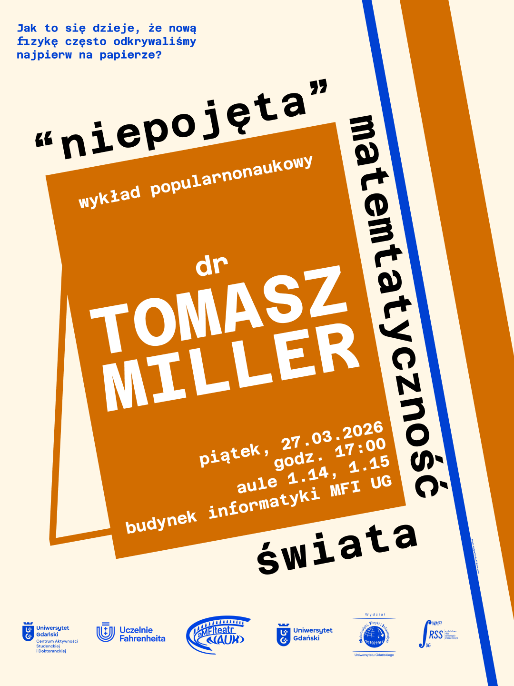

Najnowsze wpisy

Zapraszamy na II edycję aMFIteatru nauki!
Już 27 marca gościć będziemy dr. Tomasza Millera w ramach naszego cyklu wykładów popularnonaukowych. Temat przewodni: „Niepojęta” matematyczność świata.
Czy wszechświat to tak naprawdę jedno wielkie równanie matematyczne? Dowiedz się, dlaczego równania bywają mądrzejsze od ich autorów. Wstęp jest całkowicie wolny, zapraszamy wszystkich studentów FarU!
Szczegóły wydarzenia
Dziękujemy za Dni Otwarte na MFI!
Za nami niezwykle intensywne, ale fantastyczne Dni Otwarte Uniwersytetu Gdańskiego na naszym Wydziale! Dziękujemy wszystkim licealistom i pasjonatom nauk ścisłych, którzy odwiedzili nasze stoiska.
Jako Samorząd mieliśmy przyjemność opowiadać Wam o studiowaniu z naszej perspektywy, o projektach takich jak Mentoring czy aMFIteatr nauki. Mamy nadzieję, że z wieloma z Was zobaczymy się już w październiku na korytarzach Instytutów Informatyki, Fizyki i Matematyki!